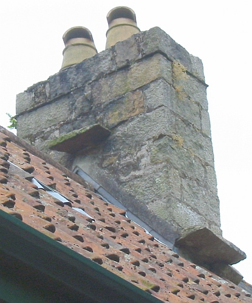

"Pouortchi?" qué j'dis à Papa eune séthée auprès l'thée: "Pouortchi qu'les chorchièrs au temps pâssé 'taient si lâssés?"
"Pouortchi?" qué j'dis à Papa eune séthée auprès l'thée: "Pouortchi qu'les chorchièrs au temps pâssé 'taient si lâssés?"
"Tchi qui t'a dit qu'les chorchièrs 'taient lâssés, man fistaud?" qu'Papa m'rêponnit auve eune tchestchion.
"Ch'est en tchi j'tais siez lé Harvey Podêtre, tch'est un garçon dans ma cliâsse à l'êcole. Sa fanmil'ye a eune grande maîson auve un tas d'tèrrain. Lus maîson est grande et vielle et bâtie en grannit auve un tas d'appartéments. La maîson soulait êt' eune fèrme et il' ont convèrti la vielle êtabl'ye en eune bangnérêsse et la boulangu'thie dans eune salle à billards..."
"Il' ont un magl'ye dé bein, don," qu'Papa dit. "Ch'est-i' qu'i' sont des chorchièrs tch'ont enchorchélé tout chenna auve lus scîn? Ch'n'est pon ravissant qu'i' sont lâssés s'i' sont tréjous à envyer des sorts pouor aver des sou!"
"Nou-fait, Papa! I' n'sont pon des chorchièrs! Harvey mé mouontrit les vielles cheunm'nées sus les liefs où'est qu'i' y'a des pièrres sus les bords, et Harvey m'racontit qu'nou dit qu'les chorchièrs soulaient jutchi là-haut, sus ches pièrres-là, quand i' 'taient lâssés. Pouortchi qu'les chorchièrs 'taient lâssés, Papa, et pouortchi qu'i' jutchaient sus les cheunm'nées?"
"Vai-tu, fistaud, qu'ches pièrres-là ont nom des pièrres dé chorchièrs. Y'en a tchi dithent qu'au temps pâssé les chorchièrs et chorchiéthes soulaient lus attrouper à Rocque Bèr touos les Vendrédis. Viyant qu'i' n'y'avaient pon d'vaituthes ni d'beusses dans chu temps là et qu'toutes les routes avaient 'té bliotchies par des tchêtes dé rotchièrs - des rotchièrs avaient drotchi du Mont Fêlard, du P'tit Mont, du Mont d'la Ville, du Mont ès Pendus, du Mont Couochon, bein touos les monts 'taient faillis - et qu'la Lait'tie d'Jèrri avait dêfoui les grandes routes à seule fîn d'y'entèrrer lus tchuyaux d'lait..."
"Des tchuyaux d'lait souos les routes, Papa?"
"Assa, nou-s'avait êprouvé bein dé manniéthes dé d'livrer l'lait partout l'Île, même dans des pithamides."
"Du lait dans des pithamides? Oh Papa!"
"Mais ch'est la puthe, plieinne et entchiéthe véthité qué nou soulait patchi du lait d'Jèrri dans des pithamides," qué Papa însistit. "Tout coumme jé n'pâlons pon des pithamides mais des pièrres dé chorchièrs: touos les Vendrédis les chorchièrs avaient lus assembliées à Saint Cliément, mais l'problième 'tait l'transport. Les c'mîns 'taient bliotchis par des rotchièrs et des tranchies pouor des tchuyaux. Lé pus conv'nabl'ye 'tait don d'y voler par la chorchell'lie. Nou dit qu'les chorchièrs griyaient un nièr onguent qu'il' onguennaient sus lus corps épis i' pouvaient voler dans l'air, mais il' avaient à lus r'pôser sus lé c'mîn, ou pus à co par d'ssus du c'mîn. Et les gens soulaient bâti des pièrres dé chorchièrs dans lus cheunm'nées pouor faithe pliaîsi ès chorchièrs, car s'i' un chorchi ou eune chorchiéthe né trouvaient pon d'pièrre sus tchi jutchi pouor èrprendre haleine, bein, ch'tî-là pouôrraient bein envyer un sort sus la maîson et la fanmil'ye tch'y d'meuthait."
"Papa, tch'est qu'i' y'avait dans chu nièr onguent?"
"Eh bein, man fistaud, l'èrchette 'tait un tèrribl'ye ségret et un mystéthe avant et n'y'a fis d'âme achteu tch'en connaît touos l's îngrédgeins, mais j'ai ouï dithe qué chu mêlange maûdit cont'nait tchiques onches d'ongl'yes d'êtchutheu, un gros t'orté, d's ouongnons picliés, d's ohièrs, deux oeux et eune preune..."
"Oh, Papa!"
"Mais y'en a d'aut's tch'ont raconté qu'l'èrchette du nièr onguent ès chorchièrs 'tait mêlachie d'auve du tchèrbon, du tchèrfais dé tchitte-tes-clius, d'la tchèrpie, du tchif-tchif, et eune tchullée à thée d'tchu d'tchian."
"V'là tch'est malaûc'seux, Papa!"
"Véthe, mais vai-tu qu'les chorchièrs né gouôtaient pon lus onguent. Ch'tait pouor les faithe voler dans l'air, et ch'est cèrtain qu'il éthait deu aver un goût r'lévé. Mais, man fistaud, y'a un aut' ségret entouor les pièrres des chorchièrs. Sai-tu pouortchi qu'i' sont pliaichies trais sus eune cheunm'née? Ieune à haut et les aut' deux un mio pus bâsses par les bords?"
"Nânnîn, Papa," qué j'rêponnis. "Pouortchi don?"
"Eh bein, la rêponse est bein sîmpl'ye," qué Papa explyitchit, en avalant eune gorgie d'sa modgie d'thée. "Ch'tait à seule fîn qu'trais chorchièrs pouvaient lus mâter sus eune cheunm'née à la fais!"
"Papa! Mais pouortchi trais chorchièrs à la fais?"
"Bein, man fistaud, tu sai qu'en 2015 j'allons atchilyi en Jèrri un tas d'joueurs dé gammes et d'sports pouor les Gammes des Îles?"
"Tch'est qu'ch'est les Gammes des Îles?"
"Ch'est coumme des Gammes Olŷmpiques pouor les îles tchi n'sont pon des grands pays. Y'a des compétitions dans la tith'thie, l'arbalêqu'sie, la pédal'lie, la couôrrie, la nagegie, la féth'thie, la galvaûqu'sie, la tchiédgie, la vilannie, la dgédochie, la pleurêsie, lé tentabis, la caûque-souothis..."
"Oh Papa!"
"Ch'est en tchi les compétiteurs d'la caûque-souothis sont bein adèrts. Tu sai qu'i' y'en a tchi tithent sus des pigeons en èrdgile? Assa des compétitions d'la caûque-souothis y r'sembl'yent un mio sénon qu'nou fait sèrvi des caûque-souothis au run d'pigeons, et tchi n'sont pon en èrdgile mais en fronmage, et nou n'tithe pon d'ssus mais nous-s'y'êcopit. Et nou-s'est encafoté. Et nou gângne des mèrques pouor l'êffet artistique, coumme dans la patinn'nie."
"Ch'est tout bein, Papa, mais tch'est qu'en est pouor les chorchièrs?"
"Tu vai qu'au jour d'aniet hardi d'monde sont entchéthaûdés par les compétitions d'sports, et au temps pâssé nou 'tait pus à co entchéthaûdés par les compétitions d'sorts. Pouor dithe lé vrai, nou n'avait pon grand chouaix, car nou 'tait dévrai entchéthaûdé par les chorchièrs. Et coumme j'atchilyons d's êtchipes dé partout l'monde pouor les Gammes des Îles, au temps pâssé les Gammes des Chorchièrs attriotchaient d's êtchipes dé gens du grand sang dé partout. Y'avait d's êtchipes dé chorchièrs, d's êtchipes dé chorchiéthes, d's êtchipes dé tchéthaûds, et même eune êtchipe dé 'sorchièrs' (coumme nou dit) dé Dgèrnésy. Y'en avait dé toutes les maûdites sortes! Et ches gammes avaient tréjous lieu à la fîn du mais d'Octobre."
"Et tchi sports qu'i' faîthaient, Papa?"
"Ché n'tait pon exactément qu'nou fait du sport, man fistaud; ch'tait pus à co qu'nou bouort. Ch'tait d'la grande bouordéthie d'onguent. L's êtchipes littaient pouor gângnie des médâles pouor la graiethie d'nièr onguent, d'bliu onguent, d'rouoge onguent, d'vèrt onguent et l'mains fait sèrvi onguent couleu d'lîlas. Châque êtchipe avait à bouordre lé miyeu onguent pôssibl'ye et ch'tait l'Pid-Froutchi lî-même tch'en 'tait l'juge. J't'en châle qué ch'tait eune grande affaithe! Toutes les êtchipes à bouordre lus onguent dans d's ênormes peîles, à rêmouer atout des rabots faits d'os dolés, et l'onguent bouoillant à êcliatchi toute eune niétchie d'rêmouêthie!"
"Ch'tait coumme eune séthée d'nièr beurre, don, Papa?"
"À un fi près, man fistaud, sénon pouor l'odeu tchi 'tait abominnabl'ye! Ches peîlées-là d'nièr onguent înfectaient les sept Pâraisses, et même les douze! Des grandes aûtchies d'feunmâtchais enchorchélé pâssaient par la campangne. Toute l'Île en 'tait înfectée et empouaîsonnée et enfeuntchie. Les chorchièrs, en griyant lus peîlées d'onguent, halaient d's aûtchies pouor d's heuthes et d's heuthes. Quand les gens d'Jèrri en avaient eune nâsil'lie, bein tu pâle qu'il' en 'taient êffrités. I' lus muchaient siez ieux. I' bârraient les portes, êtoupaient les creux, et lus abriaient du mus qu'i' pouvaient d'la hôrribl'ye odeu. Nou n'ôsait pon mett' lé nez d'houors. Mais ches aûtchies lus silyaient partout, par l's us, par les f'nêt's, par les cheunm'nées. Les chorchièrs pouor lus compétitions halaient, halaient, halaient d's aûtchies, et les pouôrres gens siez ieux partout l'Île souffraient hôrribliément. Y'en avait-i', des houîns et des ouas! L's aûtchies qu'les chorchièrs halaient des peîlées d'onguent faîthaient lèrmer les gens, les faîthaient plieuther, les faîthaient ouâler, les faîthaient houinner... Ch'est-i' qu'i' lèrmaient et plieuthaient et ouâlaient et houinnaient!"
"Oh les pouôrres gens, Papa!"
"Véthe, ch'tait pénibl'ye. Et tant pus les chorchièrs halaient d's aûtchies, pus les gens houinnaient. Ch'tait tréjous hale, hale, hale, et toute la niet houinne, houinne, houinne. Et par cause qué chenna s'adonnait à la fîn du mais d'Octobre, né v'là pouortchi qué j'dithons qué ch'est "Halle-et-Houinne"!"
"Papa! La compétition!"
"Coumme j't'ai dêjà explyitchi, ch'tait eune compétion parmi les chorchièrs pouor graie d'l'onguent magique. Coumme à l'Eisteddfod, y'avait des prix dans des difféthentes cliâsses. Et pouor des difféthents âges étout coumme dé raîson: pouor les 'souos chent ans', pouor les 'souos chent chînquante ans', pouor l's 'êtudgiants', pouor l' 'încantâtion en tchoeu', et tout chenna. Épis y'avait eune médâle pouor d'l'onguent, pouor d'l'amalgamot, pouor du margouôlîn, et pouor d'la gelée."
"D'la gelée, Papa?"
"Bein, s'i' 'taient à graie toutes ches peîlées-là, i' 'tait d'mêtchi d'graie étout d'la gelée par d'ssus l'marchi. Sans doute toute la rêmouêthie et hal'lie d'aûtchies, v'là tchi lus donnait un bouon appétit. Et châque êtchipe avait sa gelée partitchuliéthe, à chein tchi pathaîssait. Nou dit qu'les sorchièrs Dgèrnésiais griyaient tréjous d'la gelée d'ânes: j'ai ouï dithe qué nou n'gângnait dgéthe dé médâles auvec - ouaithe qué nou-s'y m'ttait du goût d'pas-d'âne, entout y'avait trop d'èrtunfîn d'chabot..."
"Puèque!" qué j'excliâmis.
"Véthe, man fistaud, puèque! Et touos ches mêlanges dêgouôtants, ches onguents, ches margouôlîns, ches amalgamots et ches gelées tchi faîthaient houinner, les gens d'Jèrri app'laient tout chenna d'la 'dgemme'."
"Ch'est d'l'Angliaîchîn, n'est-che pon, Papa?"
"Assa, nou faîthait sèrvi l'mot Angliais 'jam', coumme chenna: 'dgemme', car à chu temps-là en Jèrri l'Angliaîchîn 'tait acouo considéthé par les campangnards coumme la langue du dgiâbl'ye, du d'vis înfèrna, un dgèrgon dgiâbolique, et pouor ieux don toute chutte bouordéthie-là 'tait d'la 'dgemme'. Et viyant qu'ou dgemmait lus ièrs, lus gorges et lus ponmons, ch'n'est pon ravissant tout coumme qu'ou fut mênommée d'la dgemme. Et pouor èrvénîn à la compétition, à la fîn d'la bouordéthie dé toute chutte dgemme, du nièr onguent, du bliu onguent, du rouoge onguent, du vèrt onguent et d'l'onguent couleu d'lîlas, et d'la gelée étout, les êtchipes dé chorchièrs, chorchiéthes, tchéthaûds et 'sorchièrs' potaient lus mêlange pouor la grande jug'gie. Les difféthents amalgamots et margouôlîns 'taient mîns en pots, épis l'Pid-Froutchi êpiait châque potée souongneusement pouor en jugi la qualité."
"Coumme tchi qu'nou-s'en jugeait la qualité d'l'onguent s'nou n'pouvait pon l'gouôter?" qué j'démandis.

"Coumme dé raison," qu'Papa m'explyitchit, "ch'tait pouor tester la dgemme pouor la cheinne tchi faîthaient voler mus. N'oublyie pon qué ch'tait en lus onguennant auvec qu'les chorchièrs et chorchiéthes volaient en l'air. Et ch'tait pouor ch't' êpreuve tch'est la vraie explyicâtion pouortchi qu'nou-s'a trais pièrres dé chorchièrs sus châque cheunm'née. S'nou pouvait aveindre à la pus haute des pièrres auve raîque eune pétite dâthée dé dgemme, v'là tchi 'tait la preuve qué ch'tait d'la bouonne, dgia! Un compétiteu dé châque êtchipe s'mâtait en bas du pîngnon d'eune maîson (et les gens par dédans, trembliaient-i'!) et l'Pid-Froutchi à dâther eune tchullée à thée d'la dgemme sus châtchun, et tout l'monde à vaie combein haut qu'les compétiteurs pouvaient voler. La potée d'dgemme au chein tch'av'nait à la pus haute des trais pièrres dé chorchièrs sus la cheunm'née 'tait jugie la miyeuthe et s'n êtchipe gângnait eune médâle d'or. Et l'compétiteu gângnant restait mâté sus la pus haute des pièrres dé chorchièrs à seule fîn d'y'êt' médallé par l'Pid-Froutchi. Sans doute, i' t'nait bouôn sa potée d'dgemme tandi qu'san Maît' lé félicitait. Épis les compétiteurs en s'gonde et traîsième pliaiches lus mâtaient, ieux étout, sus les pièrres dé chorchièrs, véthe, châtchun d'un bord et d'l'aut' sus les pus bâsses. Et ieux étout, sans doute, à tcheindre ordgilleusement lus potées d'dgemme tandi qu'i' 'taient médallés atout eune médâle en argent (pouor lé s'gond) et eune médâle en bronze (pouor l'traîsième). Et tu pouôrras dithe à tan p'tit Harvey Podêtre qué né v'là pouortchi qu'nou bâtissait les cheunm'nées à seule fîn qu'trais chorchièrs pouvaient lus y mâter à la fais."
"Papa!" qué j'êcriyis, "ch'est exactément coumme chenna qu'nou vait à la télévision coumme tchi qu'les compétiteurs lus mâtent sus trais d'grés pouor êt' médallés!"
"Tu'as raîson, man fistaud," qu'Papa accordit. "Mais avais-tu janmais pensé qué ch'est d'nos vielles gammes dé Halle-et-Houinne qu'nou-s'a adopté ches cérémonnies? Tch'est qu'en est la preuve? Assa, coumme tchi qu'nou-s'appelle chutte manniéthe d'abordas à trais d'grés sus tchi les trais gângnants lus mâtent pouor êt' médallés? Bein seux qu'en Angliais nou l'appelle acouo un 'pot d'dgemme'!"
Man Papa sait bouordre et rêmouer toute eune peîlée d'niolîn, et s'i' y'avait des médâles pouor les menneties, j'sis seux qu'il en gângn'gait eune médâle d'or, car il est un fichu vièr menteux.
Geraint Jennings
Viyiz étout: